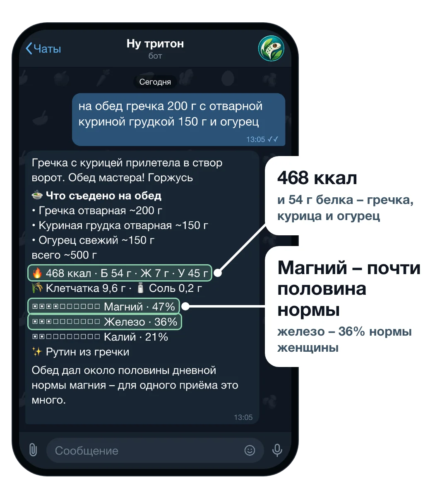
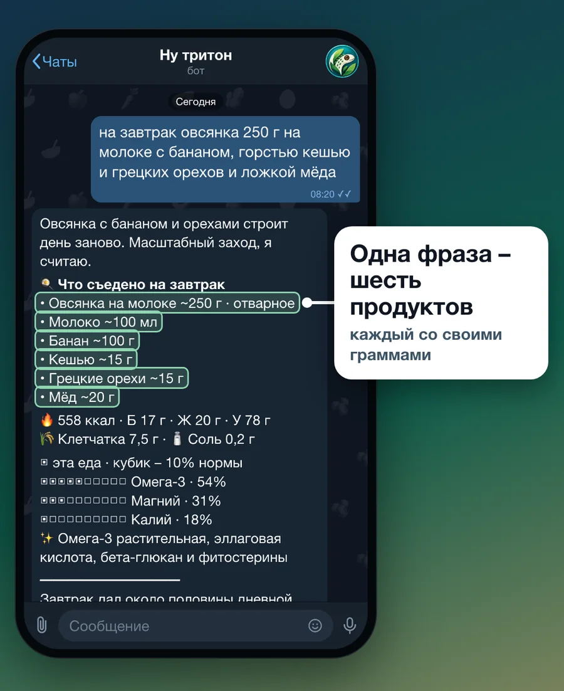
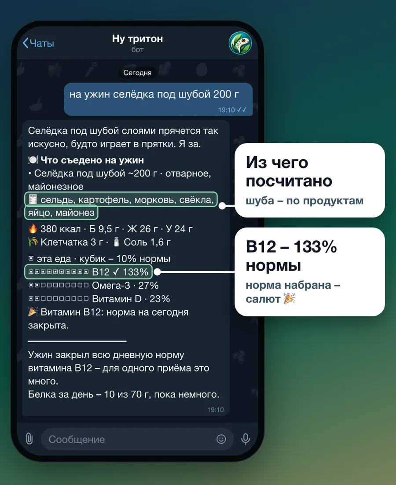
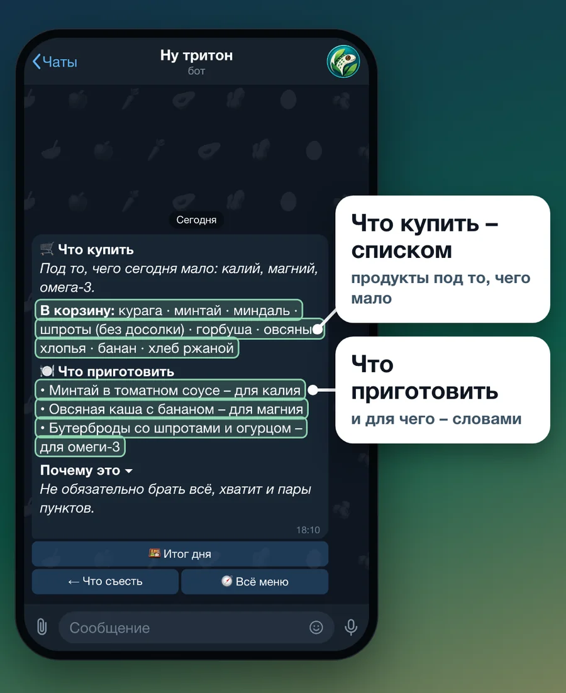
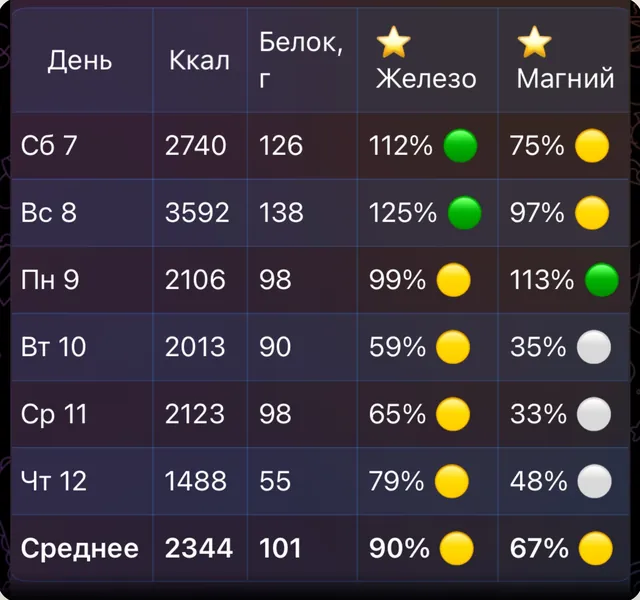
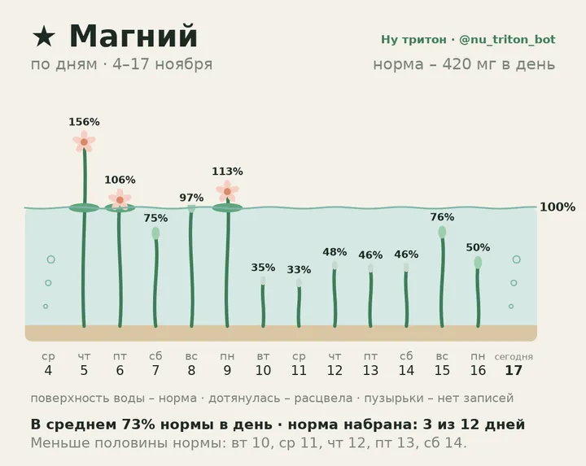
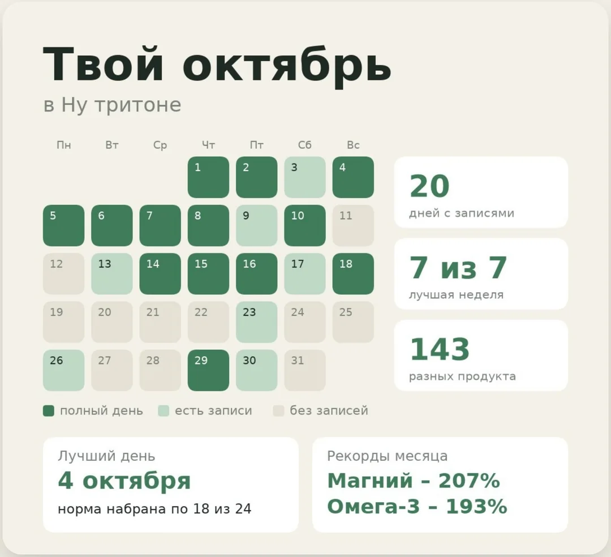

Что в еде, кроме калорий
Дневник питания в Telegram: считает калории, а ещё витамины и минералы.
- Весь день – одним голосовым. Можно и текстом, и фото.
- Подскажет, что добрать – что съесть и что купить.
или найди @nu_triton_bot
Бесплатно · без рекламы · нормы на основе рекомендаций ВОЗ

Как это работает
-
Рассказываешь, что ешь
Текстом, голосом или фото – как удобно. Бот разложит фразу по продуктам с граммами, а весь день – по приёмам.

-
Бот считает
Калории, белок и 25 нутриентов – в процентах от дневной нормы. У сложного блюда видно, из чего посчитано.

-
Подскажет, что добрать
Видно, чего за день мало, – и что съесть или купить, чтобы добрать. Добавки бот не советует и не продаёт.

Что ещё видно
Утром бот присылает итог вчерашнего дня, остальное – по кнопке, когда захочется.



Вопросы и ответы
Как узнать, сколько витаминов и минералов в еде?
Написать боту @nu_triton_bot в Telegram, что было на тарелке, – он покажет витамины и минералы в процентах от дневной нормы. Всего 25 нутриентов: 11 минералов, 13 витаминов и омега-3.
Какой бот в Telegram считает витамины?
Нутритон – в Telegram «Ну тритон», @nu_triton_bot. Это бесплатный дневник питания, который считает не только калории, но и витамины с минералами.
По каким нормам считает бот?
По официальному документу – МР 2.3.1.0253-21, российским нормам 2021 года, которые опираются на рекомендации ВОЗ и ФАО; учитываются пол и вес. Проценты считает код, а не нейросеть: одна и та же еда всегда даёт один процент.
Это бесплатно?
Да: бесплатно и без рекламы, начать можно сразу. Бот работает на бесплатных нейросетях, поэтому иногда думает секунд двадцать.
Нужно ли взвешивать еду?
Нет: достаточно написать «тарелка борща» – порцию бот оценит сам. Если вес известен, назови его: названные граммы важнее оценки.
Можно ли выгрузить данные?
Да: команда /export присылает таблицу за 30 дней, а на iPhone день переносится в приложение «Здоровье». Удалить всё – команда /delete_me.
Это медицинский сервис?
Нет: бот оценивает, что пришло с едой, а не что происходит в организме. Диагнозов он не ставит, добавки и дозировки не назначает.
Насколько точные цифры?
Это оценка: состав блюда ИИ определяет по описанию или фото, погрешность – 15–25%. Поэтому важнее среднее за неделю, чем один день.
Что было на обед?
Напиши или наговори боту – покажет, что в нём, кроме калорий.
Открыть в Telegramили найди @nu_triton_bot